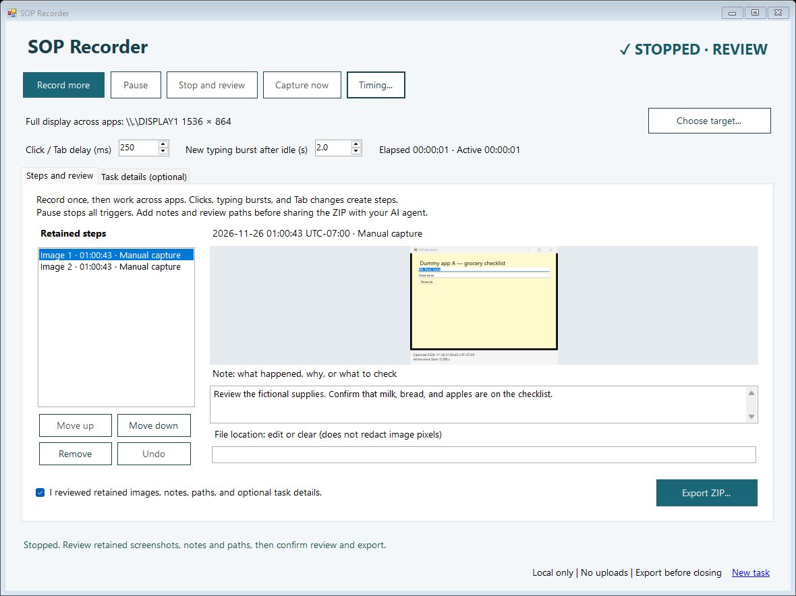
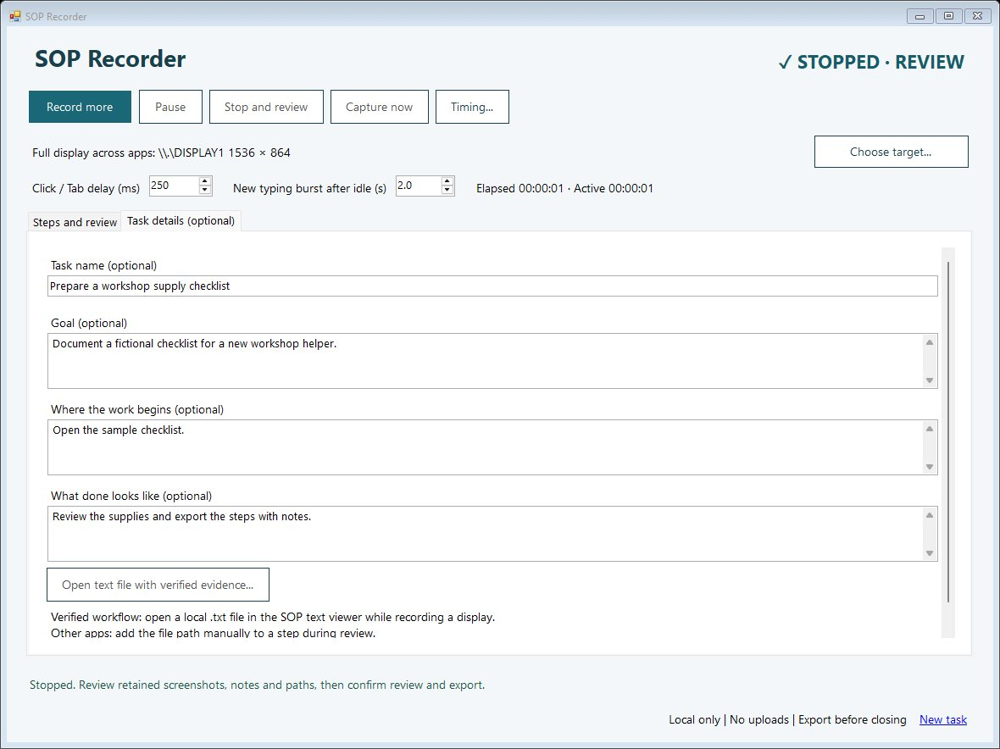

Windows workflow capture
ScreenQuill
A Windows app for capturing workflow steps and exporting screenshots and notes as evidence for writing standard operating procedures (SOPs).
Early Development · Windows-only · Windows 11 x64

Feature screenshots
Windows-only. These local previews show the running Windows controls with real captures of a fictional checklist. This build is titled “SOP Recorder.” Select an image to view it at full size.




Data guide
Data & exports
- Working session
- Screenshots are held in a temporary local session folder. Task details and notes stay in memory until export. Export before closing; saved drafts and crash recovery are unavailable.
- Exported evidence
- The ZIP contains procedure.md and numbered PNG screenshots. The Markdown includes your reviewed notes, optional task details, image references and timing information. Opened source files are not bundled.
- Review before sharing
- A display capture can include anything visible on the selected display. Inspect every retained image and remove private material before sharing. The app has no built-in pixel redaction.
Capture workflow steps
- Record Screen
- Start with the primary or selected display and work across applications. The current source captures an initial screenshot, then responds to clicks, typing bursts and Tab focus changes. You can pause, resume and capture a step manually.
- Choose a target
- Choose a display for work across apps, or an individual application window. Separate windows and dialogs may need a different target. Capture behavior depends on Windows and the selected application's rendering.
Review and export
- Keep useful evidence
- After stopping, inspect the images, add notes, reorder steps and remove unwanted captures. Optional task details explain the goal, starting point and completion criteria.
- Prepare an SOP handoff
- Confirm your review and export the evidence ZIP. Use its screenshots and Markdown with the person or tool writing the SOP. ScreenQuill does not write an SOP with built-in AI.
Get started on Windows
Download the ZIP, extract its contents together, and open SopRecorder.exe in the SopRecorder folder. This build uses the name “SOP Recorder” in its window. It requires Windows 11 x64 and the built-in .NET Framework 4.x. The current executable is unsigned.
Early DevelopmentTry a fictional workflow first. Protected windows, elevated applications and some rendering methods can produce missing or incomplete images. Physical recording across apps and multi-monitor behavior still need interactive Windows acceptance testing.